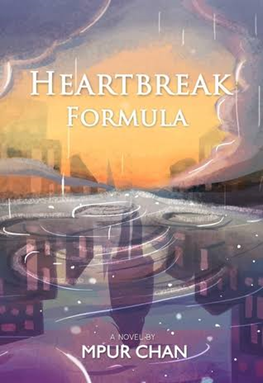
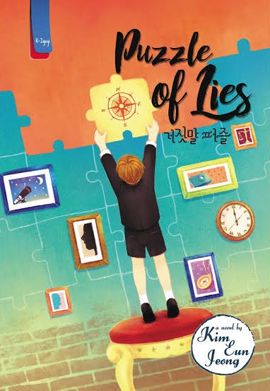

rekomended Novel
Halo semuanya! sebelum memulai, kenalin, nama aku Jasmina. di sini aku akan mengulas beberapa buku yang menurut aku wajib masuk ke list bacaan kalian! ada beberapa buku yang membahas tentang kesehatan mental juga lho, menarik bukan!? apa sajakah itu? mari kita ulas
1. Heartbreak Formula
Judul: Heartbreak Formula
Penulis: Mpur Chan
Rate: 4/5
Sinopsis:
Sore tadi pukul 6:45 di hari ulang tahun Harry yang ke-18, aku menabrakkan diri pada sebuah mobil yang melaju. Harry... pria yang kupercaya dan selalu ada untukku, berubah sejak kami masuk SMA. Pria itu tak lagi ada di sampingku, bahkan ketika aku sedang berada di titik terendah dalam hidupku. “Kupikir aku punya jawaban untuk masalahmu,” ujar Dokter Cornell, merendahkan suaranya. “Tim penerlitianku sedang bereksperimen membuat formula untuk membuat manusia lupa akan kejadian buruk di masa lalu. Formula Olvidelo. Ketika penawaran itu datang, sebuah pintu baru seolah terbuka di hadapanku. Formula itu mungkin adalah sebuah jawabannya. Masalahnya, aku tak tahu apakah formula itu akan menyelamatkanku... atau malah menjerumuskanku.
Ulasan:
Aku berhasil melahap novel ini dalam waktu kurang dari sehari! xD alur ceritanya seru banget, sampe aku nggak bisa berhenti baca karena terlalu penasaran gimana kelanjutannya.
Pertama-tama, aku beneran ngerasa amaze banget sama covernya. Cantik banget nggak, sih? Awal liat novel ini, aku udah kecantol sama covernya. Menarik perhatian! Dan aku juga suka pecampuran warnanya, termasuk ke warna yang aku suka hehe.
Awalnya aku nggak ngira ini bakal ngebahas mental illness, tapi kayaknya ini jadi topik utamanya ya? Dan juga banyak suicidal thoughts, kalo mau baca harus yakinin diri sendiri dulu lagi dalam keadaan yang baik-baik aja ya!
Aku suka penulis mengangkat tema yang mengangkat isu mental illness, dicampur dengan sci-fi pula. Penggambaran dari Zanson juga proyek Formula Olvidelo-nya menarik banget sih. Penulis lumayan menuliskan dengan begitu detail, tata bahasanya juga mudah dipahami. Nggak begitu berat, kok.
Menurut aku, keputusan Summer buat ikut proyek Olvidelo ini bener-bener keputusan berat. Tapi di sini, di tempat ini, dia nemuin pembelajaran hidup yang bisa dia ambil. Aku terharu banget sama perubahan Summer dan subjek tes lainnya, terutama teman sekelompoknya, yaitu May, June, December. Tapi sayangnya, aku ngerasa ada yang kurang mengenai interaksi Summer dengan teman sekelompoknya. Antara Summer dan June juga, masih kuraaangg, i want more! xD
Di beberapa adegan, novel ini berhasil bikin aku nangis. Entah emang aku yang terlalu terbawa suasana, atau penulis yang berhasil menyampaikan perasaannya kepada pembaca. Pokoknya, aku jadi ikut merasa sedih dan terharu ketika tokoh-tokoh di sini berhasil mengikhlaskan masa lalunya dan tetap berusaha berjalan maju ke depan. Meski mereka merasakan sakit, tapi mereka nggak boleh menyerah dengan kehidupan. It hits me hard. Sesakit apapun itu, kehidupan harus tetap berjalan. Dan kematian, bukan satu-satunya jalan.
Pembelajaran terpenting sih,
1. Perlahan cobalah untuk mengikhlaskan segala hal yang terjadi dalam hidup.
2. Semua orang punya jalannya masing-masing. Kita nggak bisa minta mereka buat tinggal ketika sebenarnya mereka ingin pergi.
3. Masa lalumu itu yang membentuk dirimu yang sekarang.
4. Dan masih banyak lagi~
2. Puzzle Of Lies
Judul: Puzzle Of Lies
Penulis: Kim Eun Jeong
Rate: 4/5
Sinopsis:
Namaku Jo Yun Geon, seorang pengacara. Beberapa hari yang lalu, Mi Hyang, temanku saat kuliah, tiba-tiba menelepon ke kantor biro hukum tempatku bekerja. Dia adalah seorang hakim dan hubungan kami sedikit rumit. “Aku ingin kau menjadi wali,” kata Mi Hyang. “Namanya Dan Tae, anak laki-laki, usia sembilan tahun.” Sialnya, aku tidak bisa menolak saat tiba-tiba anak laki-laki itu datang ke apartemenku dan harus tinggal denganku. Selesailah sudah kehidupan single-ku yang bebas.
Ulasan:
Novel ini tebel banget, nyentuh 500 halaman lebih. Aku ngebagi waktu buat baca karena takut bosen kalo ngebaca novel ini sekaligus, hehe. Tapi dengan halaman setebel itu, beneran worth it kok! Banyak juga pembelajaran yang bisa diambil.
Jujur, awal baca aku beneran sebel banget sama tokoh utamanya, Jo Yun Geon. Tapi ini nggak bikin aku ngerasa pengen berhenti baca sih, cuma ya jadi gedek sendiri bacanya. Sifatnya yang seenaknya dan pemikirannya yang nganggep cewek tuh gampang buat ditinggalin beneran ngeselin. Tapi untungnya, dia ngalamin character development juga. Yang aku suka, dia belajar itu semua setelah menghadapi kejadian hidup yang mungkin nggak dia sangka bakal terjadi. Singkatnya, belajar dari pengalamannya sendiri.
Tema dari novel ini bisa dibilang cukup sensitif sih. Di sini ngebahas pelecehan seksual, harta warisan, dan lainnya. Aku suka eksekusi penulis buat nyelesaikan masing-masing permasalahan. Di beberapa adegan aku sampe tersentuh bahkan nangis. Aku bisa ikut ngerasain apa yang udah mereka laluin selama hidup. Berat, tapi mereka tetap menuntut keadilan. Mereka hebat! Oh iya, karena mengurusi kejadian-kejadian seperti ini, itu beneran ngebantu Yun Geon buat berkembang. Semakin buka lembaran novel, semakin aku merasakan perubahan dari tokoh utama kita ini. Pembelajaran dari hidup sendiri memang hit different ya.
Aku salut sama penulis novel ini, dan juga plot twistnya! Mungkin entah aku yang kurang fokus baca atau memang penulis yang udah nyiapin plot secara matang, setelah fakta demi fakta keungkap, banyak hal yang bikin aku kaget. Ternyata, semua tokoh di sini tuh saling berhubungan. Aku kira mereka emang tiba-tiba aja ada urusan sama tokoh utamanya gitu, tapi nggak. Mereka saling punya keterkaitan yang melengkapi alur ceritanya. Di sini aku bener-bener kayak, "woaaaaah!". Keren.
3. A Untuk Amanda

Judul: A Untuk Amanda
Penulis: Annisa Ihsani
Rate: 4/5
Sinopsis:
Amanda punya satu masalah kecil: dia yakin bahwa dia tidak sepandai kesan yang ditampilkannya. Rapor yang semua berisi nilai A, dia yakini karena keberuntungan berpihak padanya. Tampaknya para guru hanya menanyakan pertanyaan yang kebetulan dia tahu jawabannya.
Namun tentunya, tidak mungkin ada orang yang bisa beruntung setiap saat, kan?
Setelah dipikir-pikir, sepertinya itu bukan masalah kecil. Apalagi mengingat hidupnya diisi dengan serangkaian perjanjian psikoterapi. Ketika pulang dengan resep antidepresan, Amanda tahu masalahnya lebih pelik daripada yang siap diakuinya.
Di tengah kerumitan dengan pacar, keluarga, dan sekolahnya, Amanda harus menerima bahwa dia tidak bisa mendapatkan nilai A untuk segalanya.
Ulasan:
Novel ini sepertinya sudah ketiga kalinya saya baca sejak pertama kali membeli. Ketika kembali membaca di umur saya yang bisa dibilang lebih dewasa dan mulai memahami persoalan hidup, maka novel ini semakin terasa dekat dengan saya. Banyak detail yang mungkin dulu saya lewati dan hanya membaca bagian selanjutnya. Padahal, itu dapat menjadi nilai plus untuk novel ini.
Saya jadi mengetahui istilah-istilah dalam psikologi, juga tentang sains. Membaca novel ini jadi membuat pikiran saya terbuka. Tidak hanya menceritakan tentang keresahan Amanda, tapi buku ini memiliki pesan-pesan yang ingin disampaikan penulis dalam detail-detail yang ditulisnya. Seperti, orang terdekatmu juga berkemungkinan besar dapat mengecewakanmu; Orang-orang tidak peduli dengan pencapaian dan kegagalanmu; Datang ke psikolog/psikiater, bukan berarti dia lemah. Bukan pula berarti dia gila. Tapi dia mencoba memahami dirinya sendiri, sehingga dia mencari bantuan dengan datang ke ahlinya.
Saya suka sekali dengan novel ini. Umur saya bisa dibilang sama dengan Amanda, sehingga saya jadi bisa merasakan lebih dalam mengenai apa yang ia rasakan. Novel ini menceritakan sosok Amanda dari tahun pertamanya hingga ia lulus. Latar waktunya selama tiga tahun. Di akhir cerita, saya merasa emosional karena telah membaca perjuangan Amanda hingga titik ini. Ia selalu menjadi pribadi yang ambisius dan perfeksionis, tapi di akhir cerita ia tidak menuntut itu semua. Ia tetap mencoba untuk berdamai dengan dirinya sendiri. Tidak apa ia tidak menjadi lulusan terbaik, tidak apa ia menunda kuliahnya selama setahun, tidak apa nilainya terjun bebas dan ia tidak jadi juara sekolah lagi, tidak apa ia gagal. Itu bukti bahwa ia merupakan manusia normal, manusia biasa, manusia seutuhnya.
Kegagalan dapat dijadikan pembelajaran untuk tetap maju dan memperbaiki bagian yang salah. Amanda bisa dibilang selalu memikirkan apa yang orang pikirkan tentangnya. Bukan hanya itu, bahkan ia membuat pemikiran sendiri tentang anggapan orang lain mengenai dirinya. Hal ini membuat pemikirannya penuh akan anggapan buruk yang ia tanam pada dirinya sendiri. Namun di akhir cerita, ia mulai menyadari bahwa tidak semua orang peduli akan pencapaiannya, tidak semua orang peduli akan kegagalannya. Jadi, untuk apa memikirkan hal yang hanya menghambat dan membuat diri sendiri menderita?
Novel ini mempunyai beberapa kelebihan, di antaranya dari segi penulisan. Saya sangat suka dengan tulisan Annisa Ihsani yang mempunyai gaya khas novel terjemahan. Bahkan dulu saya sempat mengira ini bukan novel penulis lokal. Dengan gaya khas novel terjemahan ini, tentu gaya bahasanya pun diperhatikan, yaitu menggunakan bahasa baku. Saya termasuk salah satu orang yang menyukai penulisan novel dengan bahasa baku. Jadi bisa dikatakan, novel ini sesuai dengan selera saya. Meskipun menggunakan bahasa baku, percakapannya tidak terasa kaku dan malah dibiarkan mengalir layaknya obrolan anak muda. Terselip juga humor di sela pembicaraannya–meski saya harus berpikir terlebih dahulu karena humornya sering kali melibatkan sains. Selain itu, tema yang diangkat pun menarik, dan merupakan topik yang cukup jarang dibahas oleh penulis lokal. Pembahasan tentang mental health memang lebih terasa relate di zaman sekarang, karena orang-orang sudah semakin terbuka dan sadar akan pentingnya kesehatan mental.
Penulis memilih untuk menggunakan sudut pandang orang pertama, sehingga pembaca jadi bisa lebih memahami apa yang dirasakan oleh karakter utamanya. Karena menggunakan sudut pandang orang pertama pula, alur cerita jadi terasa lebih rapi. Pembaca bisa melihat perubahan yang terjadi pada Amanda dan apa saja yang dipikirkannya. Karakter lain dalam novel ini pun cukup berperan penting dalam pembentukan konfliknya, jadi tidak hanya berperan sebagai pemeran figuran. Untuk bagian luar, kover dibuat simple namun menarik. Tampilan layoutnya pun rapi. Bentuk huruf yang digunakan sangat pas dibaca dan tidak mengganggu mata. Percakapan via online pun mudah dibedakan dengan paragraf biasa.
Dari segi bahasa, memang sangat unik karena ditulis seperti novel terjemahan. Tapi, ada cukup banyak kata yang tidak umum dipakai sehingga beberapa kali saya bolak-balik ke internet untuk mencari tahu artinya. Selain itu, ada pula kalimat yang sulit dipahami, terutama oleh orang awam. Terkadang saya juga tidak memahami beberapa percakapan ataupun monolog yang dimaksud di novel ini, namun itu tidak memengaruhi pemahaman saya akan isi ceritanya. Saya juga menemukan sekitar dua atau tiga kata yang tertulis double di satu kalimat yang sama, tapi itu tidak mengganggu mood saat membaca karena memang tidak berpengaruh pada alur cerita. Di sisi lain, penggambaran latar tempatnya cukup abu-abu. Bisa dibilang sebagai latar tempat khayalan? Karena penulis pun tidak menulis secara gamblang mengenai negara bagian mana Amanda tinggal. Hal ini cukup membingungkan pada awalnya, namun juga dapat dipahami karena lebih mudah untuk membayangkan latar tempat baru yang tidak ada di bumi.
Secara keseluruhan, novel ini sangat bagus untuk dibaca oleh semua kalangan, terutama remaja yang akan menuju dewasa, sama seperti genrenya sendiri yaitu young adult. Novel ini dapat menjadi media untuk menyadarkan masyarakat termasuk remaja sendiri akan pentingnya kesehatan mental. Sering kali permasalahan mental dianggap sepele oleh masyarakat umumnya, padahal penyakit mental bisa saja menjadi lebih berbahaya daripada penyakit fisik. Edukasi mengenai kesehatan mental untungnya sudah lebih meluas dan banyak remaja yang sadar akan pentingnya hal tersebut. Dengan adanya novel A Untuk Amanda, masyarakat jadi lebih bisa memahami apa dan bagaimana yang dirasakan oleh orang yang mempunyai penyakit mental. Saya sangat merekomendasikan bacaan ini pada semua orang, terlepas dari umur, agama, profesi, maupun hal lainnya.